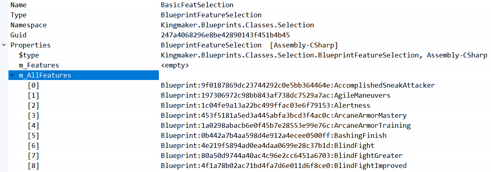
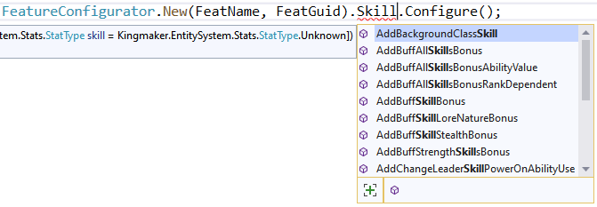
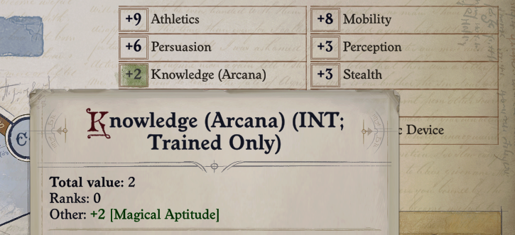

Adding a Feat
Our first feat is Magical Aptitude. Due to changes from the tabletop game our feat will grant bonuses to Knowledge Arcana in place of Spellcraft.
To keep our code organized, create a new folder called Feats. Inside the folder create a new class called MagicalAptitude. This is where we'll create the feat.
Mechanics in Wrath are often represented by Blueprints. The wiki page on Blueprints goes into a little more detail but for now we just need to know that feats are represented in game by BlueprintFeature.
Since we are creating a BlueprintFeature, we can use FeatureConfigurator. However, before we can use that we should define a method which creates the feat:
public class MagicalAptitude
{
public static void Create()
{
// TODO: Create the feat!
}
}
To create the feat we need to define a Guid and name. Every blueprint requires these. The Guid is a unique identifier the name is a human readable identifier. Since we need to reference these later and they are constants, we'll define them as static readonly fields.
public class MagicalAptitude
{
private static readonly string FeatName = "MagicalAptitudeFeat";
private static readonly string FeatGuid = "E47A36AB-EBCC-4D94-9888-B795ABD398F3";
}
Use your tool of choice to generate a Guid. Visual Studio can generate one using Tools > Create GUID. You can generate one programmatically using Guid.NewGuid(), but you'll need to save and reuse it to ensure you have a stable identifier.
Now we can create our feat:
FeatureConfigurator.New(FeatName, FeatGuid).Configure();
At this point we have added a new feature to the game, but it has no effect and you can't select it. To fix this we need to add our feature to the appropriate BlueprintFeatureSelection. As the name implies, a BlueprintFeatureSelection represents a list of features you can choose from such as feats, deities, and backgrounds. The key is figuring out which lists should include the feature.
In the game data you'll find a list called BasicFeatSelection which has all generally available feats. There are more feat lists that represent bonus feats granted by classes such as WizardFeatSelection. Some new feats belong on those lists, but for our puproses we'll only use BasicFeatSelection.
Tip
One of the best ways to figure out how to make new content is to see how existing content is implemented. There are several tools at your disposal discussed on the wiki. I highly recommend BubblePrints for exploring game content and DataViewer for validating your changes in-game.
In order to modify BasicFeatSelect we need to find its Guid. In the game data we can see it is 247a4068-296e-8be4-2890-143f451b4b45. This allows us to create a FeatureSelectionConfigurator for it. For readability we'll store in a static readonly variable.
private static readonly string BasicFeatSelectionGuid = "247a4068-296e-8be4-2890-143f451b4b45";
public static void Create()
{
FeatureConfigurator.New(FeatName, FeatGuid).Configure();
FeatureSelectionConfigurator.For(BasicFeatSelectionGuid);
}
To actually add our feat we can look at the contents of BasicFeatSelection:

Looks like the feats are stored in a field called m_AllFeatures. Since the field is an array, our configurator should have a method called AddToAllFeatures, but if you try that it will fail to compile. As it turns out, BlueprintFeatureSelection has an unused field inside called m_Features. The configurator is written to remove the ambiguity between AllFeatures and Features. Instead you can use AddToFeatures.
Note
Sooner or later you are going to have to read the game code to figure things out. Pick your choice of decompiler and open up %WrathPath%/Wrath_Data/Managed/Assembly-CSharp.dll. It's not as scary as it may sound.
FeatureSelectionConfigurator.For(BasicFeatSelectionGuid).AddToFeatures(FeatName).Configure();
Notice that the code snippet passes in FeatName rather than FeatGuid. Either would work here.
When the library needs to reference a blueprint it accepts a string with a parameter comment indicating the type of blueprint expected. That string can be the blueprint's Guid or, if you provide a mapping from name to Guid, it can be the name. Usually you must specify the mapping using BlueprintTool.AddGuidsByName, but when we created our feat using the New(string name, string guid) syntax the mapping was automatically registered.
We only need one more change before we're ready to start testing. We need to actually call our method from our blueprints init patch. In case something goes wrong, we'll wrap the call with a try/catch block and log any exceptions:
[HarmonyPatch(typeof(BlueprintsCache))]
static class BlueprintsCaches_Patch
{
// Uses BlueprintCore's LogWrapper which uses Owlcat's internal logging.
// Logs to `%APPDATA%\..\LocalLow\Owlcat Games\Pathfinder Wrath Of The Righteous\GameLogFull.txt` and the Mods
// channel in RemoteConsole.
private static readonly LogWrapper Logger = LogWrapper.Get("MagicalAptitude");
private static bool Initialized = false;
[HarmonyPriority(Priority.First)]
[HarmonyPatch(nameof(BlueprintsCache.Init)), HarmonyPostfix]
static void Postfix()
{
try
{
if (Initialized)
{
Logger.Info("Already initialized blueprints cache.");
return;
}
Initialized = true;
MagicalAptitude.Create();
}
catch (Exception e)
{
Logger.Error("Failed to initialize.", e);
}
}
}
Note
You can also use UMM's log: ModSettings.ModEntry.Logger. This logs to the Player.log file in the same directory as Owlcat's logging.
Build and install the mod, then start a game and create a new character or level up an existing one. You should see the feat during feat selection.
Warning
Don't test mods on a real save file or you run the risk of breaking it.
Tip
Tools such as ToyBox are useful when testing mods. The cheats provided can spawn enemies, level characters, and generally set the game state to whatever you need for testing.

Tip
If the feat doesn't appear, check the logs for any errors.
Now we have it showing but if you click on it nothing works and we should probably use a name other than
private static readonly string DisplayName = "Magical Aptitude";
private static readonly string DisplayNameKey = "MagicalAptitudeName";
private static readonly string Description =
"You get a +2 bonus on all Escape Artist and Stealth skill checks. If you have 10 or more ranks in one of these"
+ " skills, the bonus increases to +4 for that skill.";
private static readonly string DescriptionKey = "MagicalAptitudeDescription";
public static void Create()
{
FeatureConfigurator.New(FeatName, FeatGuid)
.SetDisplayName(LocalizationTool.CreateString(DisplayNameKey, DisplayName))
.SetDescription(LocalizationTool.CreateString(DescriptionKey, Description))
.Configure();
FeatureSelectionConfigurator.For(BasicFeatSelectionGuid).AddToFeatures(FeatName).Configure();
}
In game strings are represented using the class LocalizedString. Its key maps to different strings in different languages. LocalizationTool creates the string but only for the current language. Support for better localization is on the roadmap.
Now if you test the feat display with a name and description.
At this point we will likely make changes, build, update, and test the mod. We can configure the project to automatically update the mod after building. To do this we'll add a Copy task to our project file.
Open up your project file (
Now after building the mod is automatically updated. You may have noticed the feat icon was stylized letters "MAF". If you don't provide an icon the game automatically generates one using the name, in this case MagicalAptitudeFeat. Since abilities often require multiple blueprints I append the mechanical type, i.e. Feat, to blueprint names. For Magical Aptitude we only need one blueprint so we can drop "Feat" to get the letters "MA": MagicalAptitude. Now we need a mechanical effect. There are several ways to boost skill checks. First let's try using auto-complete to search for a "Skill" component:  AddBuffSkillBonus looks like a good fit so let's try it. Note that the skill is defined in the If you want more information on how stats are used, start by looking at the CharacterStats class constructor. The different stat classes, e.g. ModifiableValueAttributeStat, can impact whether a StatType is valid for a specific usage. The Look at ModifiableBonus.Add() to see how stacking behavior is implemented for a descriptor. Now you can start the game, level a character, and select the feat. Afterwards you should see this on your character screen:  Congratulations, you've added a feat! We're not done yet though, there are still three problems: Numbers 2 and 3 are simple so let's fix those first. You're probably wondering what BlueprintFeatureSelection has a field storing a FeatureGroup. TabletopTweaks uses this field to automatically add feats to the appropriate lists. See the FeatTool utility.
Consider using that utility or creating a config file to map your feats to feat lists. This simplifies adding feats and enables compatibility with other mods that feats or feat lists. For Magical Aptitude we'll use Notice that they both support a list of values so you can have multiple groups and tags. With the UI configuration complete we just need the bonus to become +4 after the character has 10 ranks in the skills. How can we do this? If you look at the input parameters for This is the end of the tutorial. It's up to you to finish the implementation of Magical Aptitude. There are several ways to accomplish this. One solution is provided in the tutorial project under the "Solutions" folder. When you've finished your implementation or if you're stuck, take a look at the solution. Some tips:BlueprintCoreTutorial:<ItemGroup>
<Assembly Include="$(OutputPath)\BlueprintCoreTutorial.dll" />
<ModConfig Include="$(OutputPath)\Info.json" />
</ItemGroup>
<Target Name="DeployMod" AfterTargets="Build">
<Copy SourceFiles="@(Assembly)" DestinationFolder="$(WrathPath)\Mods\BlueprintCoreTutorial" />
<Copy SourceFiles="@(ModConfig)" DestinationFolder="$(WrathPath)\Mods\BlueprintCoreTutorial" />
</Target>
private static readonly string FeatName = "MagicalAptitude";
FeatureConfigurator.New(FeatName, FeatGuid)
.SetDisplayName(LocalizationTool.CreateString(DisplayNameKey, DisplayName))
.SetDescription(LocalizationTool.CreateString(DescriptionKey, Description))
.AddBuffSkillBonus(stat: StatType.SkillKnowledgeArcana, descriptor: ModifierDescriptor.Feat, value: 2)
.AddBuffSkillBonus(stat: StatType.SkillUseMagicDevice, descriptor: ModifierDescriptor.Feat, value: 2)
.Configure();
StatType enum. Internally the game uses the StatType enum for most numeric characteristics. Instead of searching for "Skill" we could have searched for "Stat" to find different options. However, keep in mind that not every use of StatType will function with every value.Note
ModifierDescriptor enum is used to resolve stacking for multiple bonuses. If you don't specify anything it stacks with all bonuses, otherwise it follows the rules for the specific enum type.Tip
FeatureGroup is specifiedFeatureTag is specifiedFeatureGroup and FeatureTag do and why we need them. The impact of FeatureTag is easy to see in game: if you hover over a feat in the selection UI the tags are listed below the description box. You can use the search box to filter feats by tag.FeatureGroup is less clear. It contains values like CombatFeat and WizardFeat which makes it seem as if this populates class specific feat selection lists. Unfortunately it does not. Instead it is used for UI treatments such as additional description text on teamwork feats and changing the order of displayed feats in the selection UI.Tip
FeatureGroup.Feat and FeatureTag.Skills.FeatureConfigurator.New(FeatName, FeatGuid)
.SetDisplayName(LocalizationTool.CreateString(DisplayNameKey, DisplayName))
.SetDescription(LocalizationTool.CreateString(DescriptionKey, Description))
.SetFeatureTags(FeatureTag.Skills)
.SetFeatureGroups(FeatureGroup.Feat)
.AddBuffSkillBonus(stat: StatType.SkillKnowledgeArcana, value: 2)
.AddBuffSkillBonus(stat: StatType.SkillUseMagicDevice, value: 2)
.Configure();
BuffSkillBonus as well as the decompiled code, it doesn't look promising. The bonus is an int value that never changes. Looks like we need another way to update the bonus.